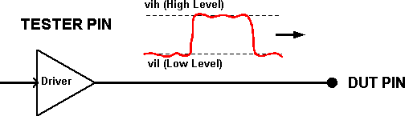
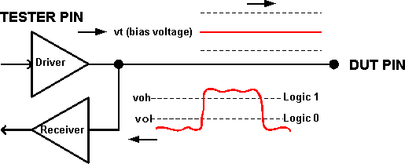

Levels for input and output pins
In single-ended signaling, an output and/or input will be on a single tester pin connected to a single DUT pin. For a drive action, the tester pin drives the DUT input pin to a high level (Vih) for a 1, or to a low level (Vil) for a 0.

For a compare action, the tester pin supplies a termination voltage (Vt) to the DUT output pin; this is voltage is needed to bias the DUT output pin so that its output signal can be measured accurately. The tester pin receives the DUT output, and compares it to the high (Voh) and and low (Vol) voltage levels, to interpret it as a 1 or a 0.

The driver in a HSM memory test card is a three-level driver, capable of driving Vih, Vil, or Vt on demand. Therefore, on the test system, the active load (which has often been used for Vt) is not needed for providing a bias voltage to the DUT pin.
When choosing values for the level parameters, refer to the level specifications given in the DUT's data sheet. The data sheet will specify the maximum and minimum rated voltage levels for the input pins and supply pins. You can define a variety of Level Sets and DPS Sets, providing the input voltage combinations needed to test the DUT under different conditions.
For output or input/output pins, the setup of the comparator levels and the test system loading conditions must be considered. The comparator levels are typically programmed close to the waveform's voltage swing midpoint.